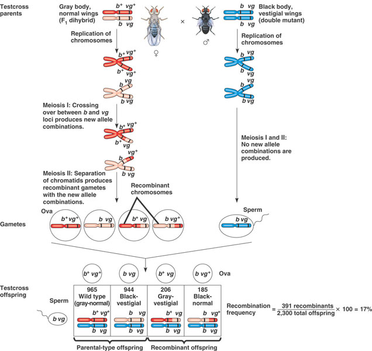

Introduction
Chi-square goodness of fit tests are used to evaluate whether an observed set of frequencies (counts) are equal to the numbers expected. The complicated part of a Chi-square analysis is determining what the expected values should be. Most commonly, expected frequencies come from:
- Proportional model - with the proportional model, the expected frequencies are proportional to the number of opportunities for the observations to occur. For example, the expected number of concussions should be in proportion to the number of kids participating in each sport.
- Theory - the expected numbers come from a distribution that the data are expected to follow if the data were produced by some hypothetical process. For example, the distribution of apples with 0, 1, 2, 3, 4, or 5 seeds should follow a binomial distribution if the seeds are pollinated independently. If the data don't match the binomial distribution, the seeds are not being independently pollinated.
We will conduct Chi-square goodness of fit analyses for each type of expected values. The calculation of the Chi-square test statistic will be based on differences between observed numbers and expected numbers in both cases, but the way that we'll come up with expected numbers will differ.
Proportional model of expected frequencies
A study of numbers of male and female children in families in Denmark was done by American and Danish scientists in 1999 (Biggar et al. 1999, American Journal of Epidemiology, 150:957-962). This study evaluated whether the chances of having a baby boy was different for the first, second, third, fourth, or fifth birth in Denmark. We don't expect equal numbers of boys to be first, second, third, fourth, or fifth because there may not be very many five-child families (Denmark, like other western European countries, has been having low birth rates for decades). We would predict, though, that if the chances of having a boy is always the same for every birth, and if this is true then the number of boys that are born first, second, third, fourth, or fifth should be proportional the number of families with one, two, three, four, or five children in Denmark. If we find that the number of boys isn't proportional to the number of families, then we'll have evidence that the chances of getting a boy changes with birth order.
1. Download this file and open it in MINITAB. You'll see that the first column lists the birth order (First, Second, Third, or Fourth), and the second column lists the number of boys born in each birth order. The number of families with one, two, three, or four children is listed in the third column.
2. Run the goodness of fit test. Select "Stat" → "Tables" → "Chi-square Goodnes of Fit Test (One Variable)...".
{kind=link}
Use the following settings in the form that pops up:
- Use "Boys" as the "Observed counts:", and "Order" as the "Category names".
- Specify "Families" as the "Proportions specified by historical counts" (leave the drop-down list set to "Input column"). MINITAB will convert the numbers of families to proportions and multiply by the total number of boys (718,820) to get expected frequencies. The "historical counts" terminology is overly specific - one way to get expected frequencies is to use data that was collected in the past to compare to new numbers, but any numbers that the observed frequencies are expected to proportionate to will work.
- Click "OK" to run the analysis.
The Session window output will give you the category names, observed numbers of boys, and observed number of families (labeled as "historical counts") that you specified, the Test proportions (relative frequencies of families), the Expected values (test proportion multiplied by total number of boys), and the contribution of each category to the Chi-square test statistic. Below that first table is the result of the goodness of fit test, which includes the total number of boys (N), degrees of freedom (categories - 1), a Chi-square test statistic, and a p-value. If p is less than 0.05 you would reject the null, and conclude that the chances of having a boy changes with birth order. If p is greater than 0.05, you would retain the null and conclude that the chances of having a boy is the same for each birth order (or, that the chances of having a boy is independent of birth order).
Two graphs are produced by default, one that just graphs the contribution to Chi-square values (which is not terribly informative, and you can ignore it), and another that compares the observed to the expected values. From the second chart it's easy to see which combinations are more common than expected and which are less common than expected. Bear in mind that you should only try to interpret the differences between observed and expected if you have a significant lack of fit between observed and expected (that is, if the p-value is less than 0.05).
**It's very important that you understand what MINITAB did here - as you learned in lecture and in the prep reading, to compare the observed counts to the expected counts it's necessary to calculate the relative frequencies (i.e. proportions) for each family size, and then multiply these by the total number of boys observed. We did not do this by hand, but that's exactly what MINITAB did for us when we specified "Families" as the "historical" counts. If you look at the test proportions in the Session window you'll see that they are the relative frequencies of the families (labeled as "Historical Counts" in the output). If you look at the expected values you'll see that they are test proportions multiplied by the total number of boys. These expected values are what are used to compare against the observed distribution of boys.
So, MINITAB does all this work for us, and all we had to do was enter values that could be used to calculate the expected values. If we had relative frequencies or percentages for the families rather than frequencies, we could have used those instead and gotten the same result. We will make good use of this in the next section, when we compare observed numbers of seeds to those predicted by the binomial distribution.
Binomial expected frequencies
For this section, you will calculate the expected frequencies for the example of apples pollinated by bees we talked about in lecture. Download this file, and open it in MINITAB. The data you will be working with are already summarized as frequencies. The first column is the number of seeds pollinate, from 0 to 5, and the next two columns are how many of that number of seeds pollinated were seen in apples pollinated by bees, or by hummingbirds.
1. Calculate the probabilities that a single seed will be pollinated. We need to calculate a probability that a single seed will be pollinated for each species to get our binomial probabilities, so we will start with that.
The probability of pollination for a single seed is the number of seeds divided by a total possible seeds. The total number of seeds pollinated by bees is found by multiplying the "Number of seeds pollinated" by the "Bees" column, and then summing them up. The total number of seeds possible is 5 seeds x 100 apples, or 500 possible seeds.
Select "Calc" → "Calculator". In the Calculator window, set "Store results in variable:" to "p". The expression you want to build is:
sum('Number of seeds pollinated' * 'Bees') / 500
You will see that you get a value in your worksheet of 0.600 in column C4, with the label "p". Write this on your assignment sheet.
Now, if you select "Calc" → "Calculator" again, you just need to change 'Bees' to 'Hummingbirds', and you will have the probability for hummingbirds. Write this number (to four decimal places) on your assignment sheet.
2. Calculate binomial probabilities for each number of seeds pollinated for bees. First, we need a place for the probabilities to go. Type "Bees binomial" into a blank column heading (in the gray area, not the first row of data), and "Hummingbirds binomial" into another.
Now to calculate the binomial probabilities to go into those columns: Select "Calc" → "Probability distributions" → "Binomial".
Change the type of probability from "Cumulative probability" to "Probability".
The "Number of trials" is the number of possible seeds pollinated in a single apple, which is 5.
The "Event probability" is the probability that a single seed will be pollinated. Use the value you just calculated for bees.
The "Input column" is the set of possible numbers of seeds pollinated that we want to calculate probabilities for, so use "Number of seeds pollinated".
For "Optional storage" select "Bees binomial". Click "OK".
3. Calculate the binomial probabilities for hummingbirds. Repeat your calculations, but use the probability you calculated for hummingbirds as the "Event probability", and put the output into "Hummingbirds binomial".
4. Test goodness of fit to the binomial expected values. Start with the bees.
Use the Chi-square goodness of fit test (one variable), with "Bees" as the "Observed counts", "Number of seeds pollinated" as the "Category names", and "Bees binomial" as the "Proportions specified by historical counts".
**Note** that we have not calculated expected counts, just probabilities - MINITAB takes care of calculating the expected frequencies for us. The expected number of apples with 0, 1, 2, 3, 4, or 5 seeds will be the binomial probabilities multiplied by the total number of apples (100), and it's these expected number of apples that will be compared to the observed number of apples to calculate Chi-square. You can confirm this in the output, there will be expected frequencies that are the binomial probabilities multiplied by 100 apples, which then are compared to the observed number of apples to calculate the Chi-square statistic.
Repeat these steps using Hummingbird frequencies as observed, and the hummingbird binomial probabilities as expected.
Challenge questions:
|
The illustration to the left shows an experiment to test for linkage between two genes, one for body color and one for wing shape. The genes are found on the same chromosome, and body color is determined by the b gene, and wing shape is determined by the vg gene. Each individual inherits one chromosome from their mother and the other from their father. Genes can come in more than one variety, called "alleles". Body color has two alleles, the "wild type" indicated as b*, which makes the body gray, and the "mutant" indicated by b, which makes the body black. Wing shape also has two alleles, with normal wings (vg*) being wild type, and the mutant (vg) causing shortened, or "vestigial" wings. When the flies make sperm and eggs, only one of each pair of chromosomes goes into each sperm or egg cell. The female fruit fly (on the left) is heterozygous for body color (b*b) and wing shape (vg* vg), and the red chromosome has both b* and vg* alleles on it, while the pink chromosome has b and vg alleles. If one chromosome went to one egg cell and the other went to another, then all of the offspring would inherit the same combination of two wild type or two mutant alleles from their mothers - these are thus the "parental" combinations. However, when sperm or egg are produced the chromosomes duplicate, line up at the midline of the cell, and one set of the legs of the doubled, x-shaped chromosomes can cross over and swap portions with one another. This is shown in the illustration when the red and pink doubled, x-shaped chromosomes swap pieces to make a mix of red and pink for one of the duplicates. This creates mixes of b* and vg, and b and vg* on chromosomes that are not found in the mother. the eggs produced by these "recombinant" chromosomes will thus have chromosomes that are not the same as the mother's. |
Crossing over is more likely to happen when genes are far apart on a chromosome, and if they are far enough apart all of the combinations, parental and recombinant, will happen in equal number. If the genes are physically close together, then crossing over between them would be less likely, and parental combinations will occur more often than recombinant ones.
The male used in a "test cross" like this has only the "mutant" genes, which are both "recessive" in this case. Recessive alleles are only expressed when there are two copies of them, and they are masked by the other, "dominant", allele otherwise. This means that a male with only recessive alleles can be used to make babies, but the appearance of the babies will be entirely dictated by the chromosome they inherit from the mother. The female is crossed with the male, and a large number of babies are produced (thanks to the incredible reproductive rate of fruit flies). The number of babies with each combination of traits is counted, which are the frequencies listed in the table above (965 wild type, 944 black-vestigial, 206 gray-vestigial, 185 black-normal).
So, if there is no linkage between body color and wing shape, then equal numbers of all the offspring phenotypes are expected. If there is linkage, then there should be more parental combinations (wild type, black-vestigial) and fewer recombinants (gray-vestigial, black-normal) than expected.
Download this file and open it. You'll see that we have the same phenotypes and observed number of offspring as in the illustration.
A. Enter the expected ratios in column C3 - use the column heading "Expected". Remember that MINITAB will convert these to expected frequencies, so any numbers you put in that reflect the fact that equal numbers of each phenotype is expected will work.
B. Conduct a Chi-square goodness of fit test on the data. Report the Chi-square value, degrees of freedom, and p-value for the test.
C. What is the null hypothesis for the Chi-square goodness of fit test for these data?
D. Did you reject the null or fail to reject it?
E. What is your conclusion? Did you have more parentals and fewer recombinants than expected? What does this tell you about whether there is linkage between body color and wing shape?